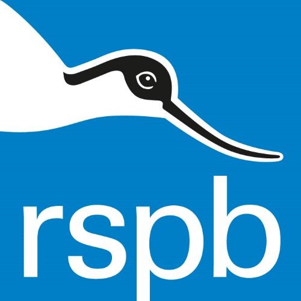

The RSPB's Big Garden Birdwatch is the world's biggest bird survey and regularly attracts
nearly half a million participants.
The records from people counting birds in their gardens provides a vital snapshot of the UK's
birds each winter.
The RSPB Big Garden Birdwatch 2019 will take place over the weekend of the 26th to
28th January 2019.
To take part in the Big Garden Birdwatch simply spend an hour watching the birds in your garden
or local park over the weekend.
Count the highest number of bird species you see at the same time. You can use pen and paper
or the RSPB's online counting tool.
Don't count the total over the hour as you may get the same birds visiting more than once.
Submit the results to The RSPB via their website.
Big Garden Birdwatch 2019 registration opens on the 12 December 2018.
Details can be found here:
"RSPB Big Garden Bird Watch 2019"